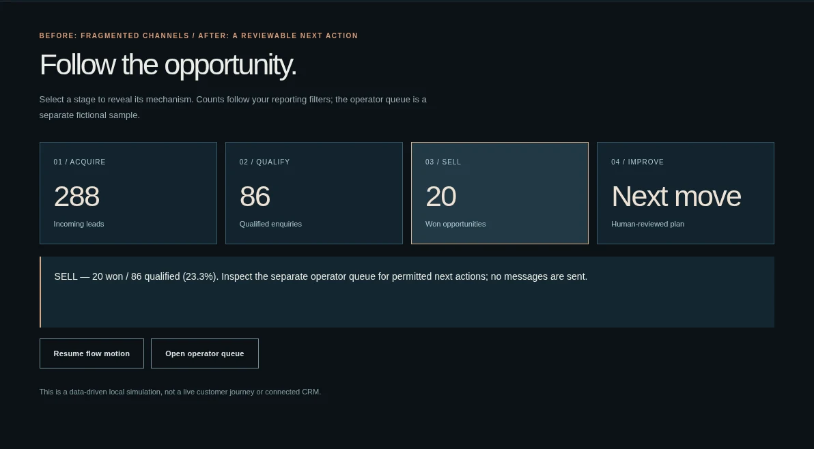

← NCNS DIGITALEXPLORE SOLUTIONS / WORKING EXAMPLES
A business problem.
A useful system.
We scope what your team actually needs, build it, help operate it and improve it through agreed measurement. Fictional demonstrations below show mechanisms, not client results.
GROWTH OS / INTERACTIVE DEMO / FICTIONAL DATAFrom fragmented leads to a next action.

Who pays: owners and revenue operations leads whose acquisition, follow-ups and reporting are disconnected.
What NCNS builds: a scoped dashboard, CRM workflow, data mapping, operator handover and optional maintenance/optimization plan. Your organization retains access to its data and agreed artifacts.
Try: filter channels → inspect conversion → manage a permitted sample follow-up → adjust assumptions → download your local action plan. No live CRM, AI, messages or real revenue claims.
OPEN GROWTH OS →EXPERIENCE LAB / REQUIREMENTS TOOLTurn an idea into a clear starting point.
Choose a direction, describe a goal and assemble a local draft. Copy it or move it into the project review brief. A functional planning tool, not a second full case study, an AI agent or a connected quotation.
TRY THE REQUIREMENTS BUILDER →The other five flagship demos are in development. We are global and multi-industry; a practical first scope matters more than a complete showcase.
REQUEST A PROJECT REVIEW →PRIVACY & CONTACT